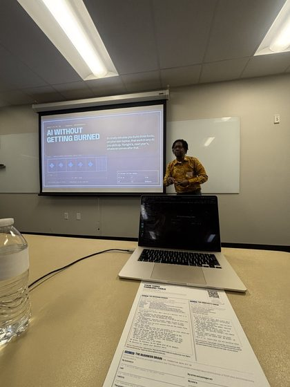
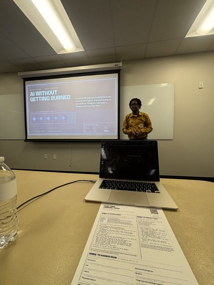
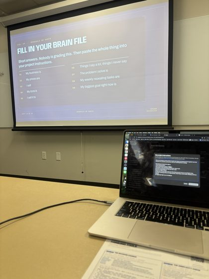
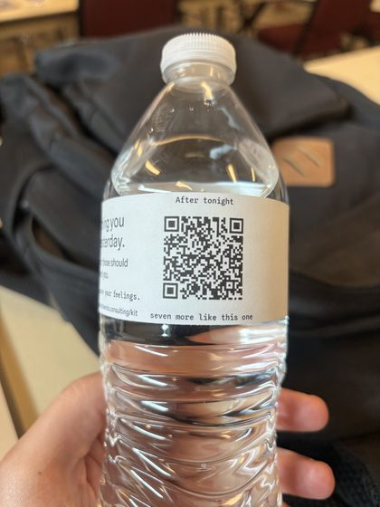
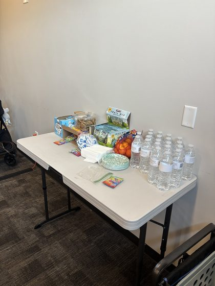
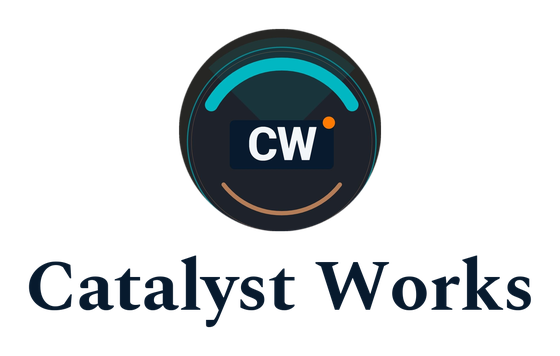

Where this stands, 2026-09-15.
DONE, nothing to redo. The profile is created. It is owned by the bokar83 Google account on purpose, so it survives anything happening to the Catalyst Works account. The wizard in section 2 is finished and submitted. Do not run it again.
WAITING on Google: video verification. Submitted and under review, up to five business days. Nothing else can be added to the profile until it clears. When it does, four things go in and that is the whole remaining job: the description in section 3, the services, hours and opening date in section 4, the photos in section 8, and the first post. The direct review link only exists after verification, so it gets pulled then too.
Doing this today. Open business.google.com/create and work down section 2. About 15 minutes, plus 5 to film the verification video.
Two things need you, both flagged inline below: which phone number goes public, and a final look at the service-area list. Everything else is decided and ready to paste. The name is confirmed: Catalyst Works.
There is no profile for Catalyst Works and nothing sitting there to claim. Checked live on Google Maps in a real browser. This is a clean create, which is the simpler case.
The one click worth getting right: when Google asks whether to add a location customers can visit, answer NO. That is what keeps your home address off Maps.
Everything on this page is chosen for the three searches you want (AI consultant Salt Lake City, AI consultant Utah, AI agency Utah). Each choice carries a short note saying why it helps. Photos and the first posts come in a second pass and do not hold up creating the profile.
YOURS Which phone number goes public.
Whatever you enter is published on Maps and gets scraped. Within days of verifying, that number starts taking cold calls from search-marketing sellers. That is the real cost of using your cell, and the only reason this is worth thirty seconds of thought.
| Option | For | Against |
|---|---|---|
| Your cell, 801-888-1963 | Zero setup, nothing to go wrong, no chance Google refuses it. | Your personal number is public permanently and gets scraped. If you ever change it, every citation breaks at once. |
| A new Google Voice number | Free, about five minutes, forwards to your cell so you miss nothing. Personal number stays private. Portable later. | Some VOIP numbers have historically been refused on business profiles. I did not verify that against current Google documentation, so treat it as a real but unconfirmed risk. |
Recommendation: set up the Google Voice number first and use it, with the cell as the fallback if Google refuses it. Five minutes now against a permanently public personal number is a good trade, and because the number has to match the website character for character once it is set, changing it later is the expensive path. If you would rather not add a step today, use the cell and we live with the spam.
YOURS A final look at the service-area list.
The list in section 2 is ready to use as-is. South Jordan is deliberately not on it, because your public city is Salt Lake City and never South Jordan. Sandy, Midvale, West Jordan and Draper surround it and are all on the list, so the coverage is there without naming the town. If you want it added anyway for the local lift of being based there, say so and it goes in. That is the only judgement call left in the list.
Settled, so you do not have to think about it: the July 30 workshop photos with attendees in frame are not being used at all. The consent on file covers advertising for free sessions, and a permanent business listing is a different thing. The photo set in the second pass uses only frames with no identifiable attendee, so nothing is lost and nothing needs deciding.
Open business.google.com/create and sign in with the Google account that should own this forever. That account is the only one that can manage the profile, and the verification video has to be filmed while signed into it.
Exactly that, nothing after it. Not "Catalyst Works Consulting", not "Catalyst Works LLC" (there is no LLC, so that would be a false legal claim), and above all not "Catalyst Works AI Consulting".
Start typing and pick it from Google's dropdown. Whatever the live dropdown shows is what governs, not this page.
Rejected: "Software company", because you do not sell software and it would place you against product companies in front of buyers who want a product. Rejected: "Consultant" as primary, because it is the generic parent and a specific category outranks a vague one.
Correction to the older plan. Earlier notes said to add "Technology consultant". That category does not exist in Google's list; you would have hunted the dropdown and not found it. The nearest real one is "Computer consultant", which pulls IT-support intent, so it is deliberately left off.
ANSWER NO
This single click is what keeps your home address off the internet. Answer No and Google goes straight to service areas and never publishes a street address. Answer Yes by reflex and your home address goes on Maps. Google's own guidance is that a business serving customers at their locations must hide it. Google still holds an address privately for verification and distance maths; it is simply never shown.
If an address ever does appear later, the fix is: Edit profile, then Location, then Business location, then turn off "Show business address to customers", then Save.
South Jordan is deliberately absent per section 1. If you decide to add it, it goes between West Jordan and Midvale.
Paste whichever number you settled on in section 1. If it is the cell:
No trailing slash, no tracking parameters.
Read live from your Calendly account today: "Free AI Audit (Owner-Operators)", 45 minutes, Zoom, active, five qualifying questions already attached.
Finish the wizard. Google then asks you to verify, which is section 5.
Why this wording, for AI answers specifically. The first sentence is a flat, factual, self-contained statement: Catalyst Works is an AI consulting practice in Salt Lake City, Utah. That is a sentence an assistant can lift whole and quote when someone asks "who is an AI consultant in Salt Lake City". An opening that leads with a benefit reads better to a human and gives a machine nothing quotable, which is the single most common way good copy loses an AI answer.
Entity, category and city sit in the first twelve words, ahead of the 250-character point where Google truncates with "Read more". Everything that has to survive the cut is in front of it.
The closing line names the served cities in plain prose because that is the form a language model reads. Service areas are map polygons to Google and invisible to an assistant quoting text, so this is the only place "Provo", "Ogden" and "Park City" exist as words on the profile.
Do not paste the version staged in August. It ended with "No deck, no six-week discovery, no follow-on pitch." That is a commercial-intent disavowal, which is banned in your copy on the grounds you gave yourself: naming the thing plants it, and a reader who sees "no follow-on pitch" starts thinking about the follow-on pitch. The line is cut rather than softened, and nothing replaced it, because the offer stands without it.
Carries the locked pitch structure (whether you need it, where it fits, how to make it work), the local angle three times, and the one proof that is yours alone. No credentials, no numbers we cannot verify, no em-dashes.
Fill these in straight after the wizard. They go live when verification clears.
Services (each gets its own description, 300-character limit)These are not your calendar and should not try to be. Profile hours tell Google when the business is reachable and feed the "Open now" filter that local searches use. Your real availability is controlled by Calendly, which already holds your rules, so nothing here can cause a booking at a bad time. This respects your 8:30 floor with room to spare. If you would rather it said 10:00, change it, it costs nothing either way.
Google asks for month and year. Correct this if it is wrong — I inferred it from your earliest account activity rather than a stated founding date, so it is the one value on this page I am least sure of. A wrong opening date is harmless, but it is yours to fix.
Attributes to switch on (tick whatever Google actually offers)The available list varies by category, so tick what is there rather than hunting for these exact words.
Expect video verification. Since July 2026 it is the default for most small businesses and effectively always the path for a service-area business working from home. If you are offered phone or email instead, take it, it is faster.
The rules, worth reading before you press record:
What to film with no storefront and no signage. Show three things in one continuous shot: the business exists, it operates, and you run it.
Expected wait: up to five business days. Sometimes minutes when the automated pass is confident, but most go to human review.
If it is rejected, do not resubmit repeatedly. Reinstatement takes days to weeks and repeat submissions push you back in the queue rather than forward. Tell me and we work out what the video was missing first.
Checked live on Google Maps in a real browser, 2026-09-15, screenshots taken and read.
Nothing of yours exists. No profile, no duplicate, no auto-generated stub, nothing unclaimed. A clean create, not a claim-and-fix.
"Catalyst Works Salt Lake City" returned five businesses, none of them yours:
| Name on Maps | Their category | Detail |
|---|---|---|
| The Catalyst Business Development Consulting LLC | Business development service | 10 W Broadway #700, (801) 871-9111, 5.0 from 5 reviews |
| Catalyst Performance & Rehab | Chiropractor | 420 E S Temple, 5.0 from 59 reviews |
| Catalyst Consulting, SLC | Consultant | 353 Milton Ave, (801) 856-3886, no reviews |
| Catalyst Coordination | Business management consultant | (385) 645-5613, 5.0 from 5 reviews |
| StreamWorks | Water jet cutting service | Name-adjacent only, unrelated |
"Catalyst Works" consulting Utah returned the same cluster plus two ads and three more: Clutch Works Consulting (Business to business service), Catalyst (Software company), Dale Carnegie. "Boubacar Barry AI consultant" returned no business for you at all; Google jumped to an unrelated place page, which is Maps saying it holds no entity for you.
Two things worth carrying forward. The categories recommended above are in active use by businesses ranking in Salt Lake City right now, which is a live confirmation the names exist. And almost every one of them has reviews while you will have zero, which is the one lever on this whole page that cannot be pasted in.
None of this is needed to create or verify the profile. It lands after verification clears.
The one thing that actually decides whether this works, and the only part no agent can do.
Reviews. Every competitor found above has them and you have none. The plan's target is 15 by day 90, roughly one and a half a week, and it only happens if the ask is systematic rather than occasional. The ask, to send within 24 hours of any real conversation: "Really glad this was useful. If you have two minutes, a Google review would help other Utah business owners find me. Here is the direct link." The direct review link only exists once the profile is verified; I will pull it and put it somewhere you can reach in one tap.
Realistic timing. A profile moves local results in days rather than the weeks everything else takes, which is why it is step one. But the clock starts at verification, not tonight.
Every file below is hosted on this page. Tap a picture to open it full size, or tap Download to save it straight to your phone. The long address under each one is the file itself if you ever need to paste it somewhere.
Google asks for a minimum of ten. There are eleven here, all JPG or PNG, all between 10 KB and 5 MB, none smaller than 720 by 720 on the short edge except the two wide brand files at the bottom, which are not meant for a Google slot.
Logo slot (one file)All five are from the July 30 session. I opened every one and looked at it: no attendee face appears in any of them, which is why these five and not the others.





These are here because you asked for the lockups, and they are the right thing to hand a printer or a sponsor. Do not upload them to Google. They are long and thin, Google crops to a square or a wide rectangle, and a cropped wordmark reads as a broken logo.

Where these came from, if you ever need the originals. The five at-work frames are the web copies of the July 30 set. The full-resolution originals and the three video clips are on this machine and in your Drive asset library. Nothing here was shrunk or re-saved, so what you download is the same file, byte for byte.
{kind=link}
{kind=link}
{kind=link}
{kind=link}
{kind=link}
{kind=link}
{kind=link}
{kind=link}
{kind=link}
{kind=link}
{kind=link}
{kind=link}
{kind=link}
{kind=link}
{kind=link}
{kind=link}